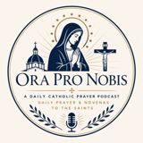

Ora Pro Nobis
Directory
Audio archive
Podcast feed
Word on Fire
Sunday
Spotify prayers
Ordinary Time
Bishop Barron Sunday Sermon
Sunday sermons from Bishop Robert Barron, linked to Spotify as an external source.
Open in Spotify